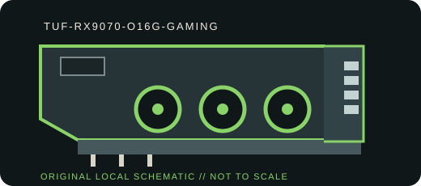

[ BOARD PARTNER MODEL // UNIQUE RETAIL SKU ]
ASUS TUF Gaming Radeon RX 9070 OC Edition 16 GB
A board-partner implementation with its own cooler, dimensions, power-feed layout and factory tuning. Manufacturer SKU: TUF-RX9070-O16G-GAMING.

VARIANT BOUNDARY: This is a partner add-in board, not an AMD reference board. Board BIOS, cooler, power limit, connector population and port mix are model-specific; verify the exact revision and product label before installation.
Recorded specifications
| Manufacturer SKU | TUF-RX9070-O16G-GAMING |
|---|---|
| GPU / architecture | AMD Radeon RX 9070 / Navi 48, RDNA 4 |
| VRAM / memory bus | 16 GB GDDR6; 256-bit |
| Host interface | PCI Express 5.0 x16; backward-compatible negotiation depends on motherboard, firmware and slot. |
| Board power / power connectors | 220 W AMD reference typical board power; TUF OC limit may vary by BIOS; 2 × PCIe 8-pin |
| Display outputs | 3 × DisplayPort 2.1a + 1 × HDMI 2.1b; verify exact revision and supported simultaneous-display configuration. |
| Dimensions / slot fit | 330 × 140 × 62.5 mm (L × H × T), 3.1-slot; verify case clearance, adjacent slots, cabling and airflow. |
| Cooler / construction | TUF triple Axial-tech fans, broad fin stack, phase-change GPU thermal pad and reinforced frame |
| Driver / platform compatibility | Use AMD Software: Adrenalin Edition for supported 64-bit Windows releases; AMD Linux graphics drivers are distributed by AMD and Linux vendors. Confirm target OS, device ID and release notes at AMD Support. Requires a PCIe x16 slot. |
Compatibility, service & archival notes
- Check card length, thickness, power-lead clearance and case airflow before fitting; the cooler may occupy multiple adjacent slots.
- Use the board partner's PSU guidance and native power leads. AMD reference TBP does not define an OC board's maximum power limit.
- Record OS build, driver version, device/subsystem ID, card revision, BIOS switch position and firmware before service.
- Related GPU names do not guarantee identical connectors, cooler assemblies, power limits or compatibility.
Manufacturer & platform sources
- ASUS board-partner product specificationProduct-family page for this manufacturer SKU; check regional specification and exact revision.
- AMD Radeon product specificationsGPU architecture, memory, interface and reference power context; partner card specifications may differ.
- AMD Software and driver supportOfficial driver downloads and operating-system support information.
TBP above is the AMD reference typical board power, not a guarantee of the partner card's factory-OC limit. Manufacturer documentation and the physical nameplate take precedence.